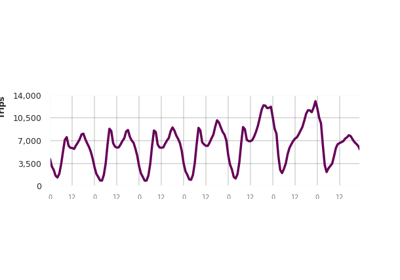
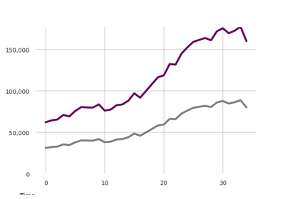
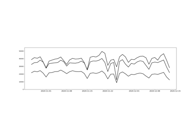

Line Charts¶
Below is a gallery of line charts.
RICK Time-of-Week Line Chart: derives from the RICK package with source code in rick.py.
RICK Line Chart: derives from the RICK package with source code in rick.py.
Mulit-line Chart: developed for activeTO with source code inside the example.

RICK Time-of-Week Line Chart

RICK Line Chart

Multi-Line Chart